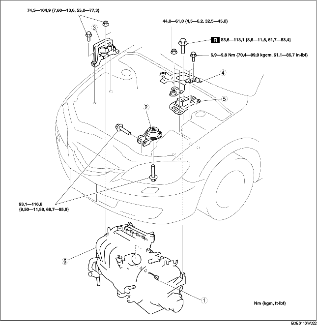

VERWIJDEREN/PLAATSEN MOTOR [LF]
B3E011001001W04
-
Waarschuwing
-
• Brandstofdamp is gevaarlijk. Het ontbrandt gemakkelijk, waardoor ernstig letsel kan ontstaan. Houd vonken en open vuur altijd ver verwijderd van brandstof.
-
• Morsen en lekken van brandstof is gevaarlijk. De brandstof kan ontbranden waardoor ernstige verwondingen en schade kunnen ontstaan. Brandstof kan tevens huid en ogen irriteren. Om dit te voorkomen, moet altijd de "Veiligheidsprocedure brandstoflijn" worden uitgevoerd. (Zie Veiligheidsprocedures voor brandstofleidingen.)
1. Verwijder de afdekplaat. (Zie VERWIJDEREN/PLAATSEN AFDEKPLAAT [LF].)
2. Verwijder het luchtfilter en de luchtslang. (Zie VERWIJDEREN/PLAATSEN LUCHTINLAATSYSTEEM [LF].)
3. Verwijder de accukap, het luchtkanaal, de accuklem, de accu en de accuhouder. (Zie VERWIJDEREN/PLAATSEN ACCU [LF].)
4. Neem de brandstofslang los. (Zie VERWIJDEREN/PLAATSEN SNELKOPPELING [ZJ, Z6, LF].)
5. Verwijder de volgende onderdelen.
-
(1) Gaskabel en steun
-
(2) Voorwielen (Zie ALGEMENE PROCEDURES (WIELOPHANGING).)
-
(3) Beschermplaat en spatschermen
-
(4) Aandrijfriem aircocompressor (Zie VERVANGEN AANDRIJFRIEM [LF].)
-
(5) Aircocompressor met de leidingen nog aangesloten.
-
Aanwijzing
-
• Zet de aircocompressor met draad of touw zodanig vast dat hij niet in de weg zit.
6. Tap de ATF (AT) of versnellingsbakolie (MT) af (Zie VERVANGEN VERSNELLINGSBAKOLIE [F35M-R].) (Zie VERVERSEN AUTOMATISCHE-TRANSMISSIEVLOEISTOF.)
7. Tap de koelvloeistof af (Zie KOELVLOEISTOF VERVANGEN.)
8. Neem de vacuümslang van de remmen los.
9. Verwijder de volgende onderdelen.
-
(1) Dwarsbalk (Zie VERWIJDEREN/PLAATSEN UITLAATSYSTEEM [LF].)
-
(2) Subframe voor, stabilisatorstang voor, onderste draagarm, stuurhuis en motorsteunrubber nr. 1 (Zie VERWIJDEREN/PLAATSEN STUURHUIS EN SPOORSTANGEN.)
-
(3) Aandrijfassen (Zie VERWIJDEREN/PLAATSEN AANDRIJFASSEN.)
-
(4) Koelvloeistofreservoir met slang nog aangesloten
-
(5) Koelventilator (Zie VERWIJDEREN/PLAATSEN RADIATEUR.)
-
(6) ATF-slang, selectiekabel en bedrading (AT) (Zie VERWIJDEREN/PLAATSEN AUTOMATISCHE TRANSMISSIE [LF].)
-
(7) Schakelkabel (MT) (Zie VERWIJDEREN/PLAATSEN HANDGESCHAKELDE TRANSMISSIE [G35M-R].)
-
(8) Koppelingswerkcilinder met de leiding nog aangesloten (MT) (Zie VERWIJDEREN/PLAATSEN KOPPELINGSWERKCILINDER.)
10. Neem de verwarmingsslang los.
11. Neem de bovenste en onderste radiateurslang los.
12. Neem de hoofddemper los (Zie VERWIJDEREN/PLAATSEN UITLAATSYSTEEM [LF].)
13. Verwijder de onderdelen in de aangegeven volgorde, zie de tabel.
14. Plaats de onderdelen in omgekeerde volgorde.
-
Opmerking
-
• Draai de bevestigingsbout van motorsteunrubber nr. 1 niet vast voordat de bevestigingsbout van motorsteunrubber nr. 3 is vastgedraaid. (Zie Aanwijzing voor plaatsen - motorsteun nr. 3 en motorsteunrubber nr. 4.)
15. Start de motor. Controleer het volgende en verhelp eventuele defecten.
16. Controleer het volgende en verhelp eventuele defecten.
-
• Voorwieluitlijning (ZieVOORWIELUITLIJNING.)
-
• Slingering en ligging van poelie en aandrijfriem.
-
• Lekkage van motorolie, koelvloeistof, versnellingsbakolie en brandstof.
-
• Ontstekingstijdstip, stationair toerental en hoeveelheid CO en HC. (Zie MOTORAFSTELLING [LF].)
-
• Werking van door de motor aangedreven accessoires.
-
Aanwijzing
-
• Maak, als de motor is gereviseerd en in de auto is geplaatst, een proefrit en controleer of alles normaal werkt.

|
1
|
Stekker hoofdzekeringenkast
|
|
2
|
Motorsteunrubber nr. 1
|
|
3
|
Motorsteun nr. 3
|
|
4
|
Accusteun
|
|
5
|
Motorsteunrubber nr. 4
|
|
6
|
Motor en transmissie
|
Aanwijzing voor verwijderen - stekker hoofdzekeringenkast
1. Verwijder de borglip in de aangegeven volgorde.
2. Trek de borghevel omhoog en verwijder de stekker.
Aanwijzing voor verwijderen - motorsteun nr. 3 en motorsteunrubber nr. 4
1. Ondersteun de motor en de transmissie met een motorkrik en een hulpstuk, zoals in de afbeelding is aangegeven.
Aanwijzing voor plaatsen - motorsteun nr. 3 en motorsteunrubber nr. 4
1. Ondersteun de motor en de transmissie met een motorkrik en een hulpstuk, zoals in de afbeelding is aangegeven.
2. Plaats motorsteunrubber nr. 1 en nr. 4.
-
Aanwijzing
-
• Draai bij deze stap de bout en moer voor motorsteunrubber nr. 1 en nr. 4 niet vast.
3. Draai de in de afbeelding aangegeven nieuwe bevestigingsbout van motorsteunrubber nr. 4 vast.
-
Aanhaalmoment
-
83,6-113,1 Nm
-
{8,6-11,5 kgm, 61,7-83,4 ft·lbf}
4. Draai de bevestigingsbouten en moeren van motorsteunrubber nr. 4 en de accusteun in de aangegeven volgorde vast.
-
Aanhaalmoment
-
(1) 44,0-61,0 Nm
-
{4,5-6,2 kgm, 32,5-44,9 ft·lbf}
-
(2) 6,9-9,8 Nm
-
{70,4-99,9 kgcm, 61,1-86,7 in·lbf}
5. Draai de tapeinden van motorsteun nr. 3 vast.
-
Aanhaalmoment
-
7,0-13 Nm
-
{71,4-132,5 kgcm, 62,0-115,0 in·lbf}
6. Draai de bouten en de moeren van motorverbindingssteun nr. 3 vast in de aangegeven volgorde.
-
Aanhaalmoment
-
74,5-104,9 Nm
-
{7,60-10,6 kgm, 55,0-77,3 ft·lbf}
Aanwijzing voor plaatsen - motorrubber nr. 1
1. Verwijder de motorkrik en het hulpstuk.
2. Draai de in de afbeelding aangegeven bevestigingsbouten van motorsteunrubber nr. 1 vast.
-
Aanhaalmoment
-
93,1-116,6 Nm
-
{9,50-11,88 kgm, 68,7-85,9 ft·lbf}